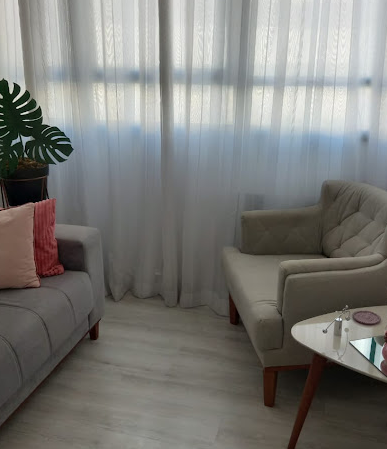
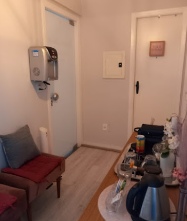
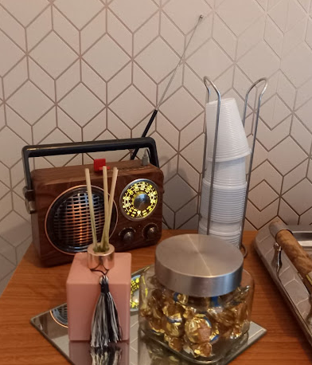
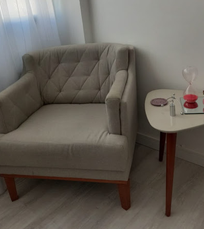

Ajudo você a compreender suas questões de forma racional, prática e humana, promovendo evolução semanal no seu processo de autoconhecimento.
Evolução
"Recuperei minha clareza"

Sou apaixonada por pessoas e dedicada a oferecer um espaço seguro e acolhedor em São José dos Campos. Minha abordagem é racional e direta, focada em ajudar você a desemaranhar as complexidades da mente de forma objetiva.
Acredito que a terapia não precisa ser um processo lento e sem rumo. Com foco no presente e nas suas questões reais, trabalhamos juntos para que cada sessão traga clareza e ferramentas para sua evolução.
Ofereço suporte em diversas áreas da saúde mental, sempre com uma visão racional e pontual.
Foco no entendimento de conflitos internos, ansiedade e depressão através de uma escuta qualificada e direta.
Trabalho focado em ferramentas práticas para melhorar sua relação consigo mesmo e o mundo ao seu redor.
Acompanhamento especializado para lidar com luto, términos e transições de vida de forma saudável e clara.
"Super recomendo! Ótima profissional, muito atenciosa e disposta a ajudar a incentivar. Já passo nela há mais de 2 anos e tive melhoras significativas."
"A Tati é uma profissional maravilhosa! Sempre focada em me ajudar a entender minhas questões de forma muito racional, pontual e prática."
"Recomendo fortemente o trabalho da Tatiane. Sinto uma evolução no meu processo semanalmente. Uma pessoa incrível."



Agende uma conversa inicial e vamos começar a trilhar o caminho para o seu bem-estar emocional hoje mesmo.
Falar com a Dra. Tatiane